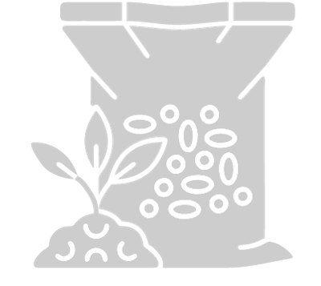

CALCULO PARA FERTILIZANTE
Y SEMILLAS A CHORRILLO
Número de surcos (n)
Distancia de surcos (m)
Kilogramos por hectárea (kg/ha)
Medición de distancia
Distancia entre puntos
Distancias por vueltas
Vueltas de
rueda (n)
diametro (m)
Distancia entre puntos (m)
CALCULAR
Superficie de medición: --
Kilos totales: --
Gramos por surco: --
INGRESE UN VALOR EN TODOS LOS CAMPOS
INGRESE TODOS LOS VALORES Y SELECCIONE UN MÉTODO DE MEDICIÓN
SELECCIONE UN MÉTODO DE MEDICIÓN
En esta pagína se calculan las cantidades necesarias de fertilizantes o bien las semillas para la siembra a chorrillo, ingresando el número de surcos, la distancia entre ellos, los kilogramos por hectárea y la distancia entre los puntos. Controle haber seleccionado un sistema de medición para este último.